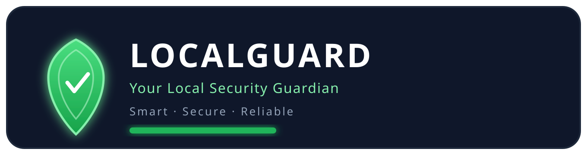

LOCALGUARD
Your Local Security Guardian
Offline security and metadata checks for your own local files.
The SVG animation respects your device's reduced-motion preference.
Use assets/localguard-logo.svg in a website, README, or app.

Your Local Security Guardian
Offline security and metadata checks for your own local files.
The SVG animation respects your device's reduced-motion preference.
Use assets/localguard-logo.svg in a website, README, or app.